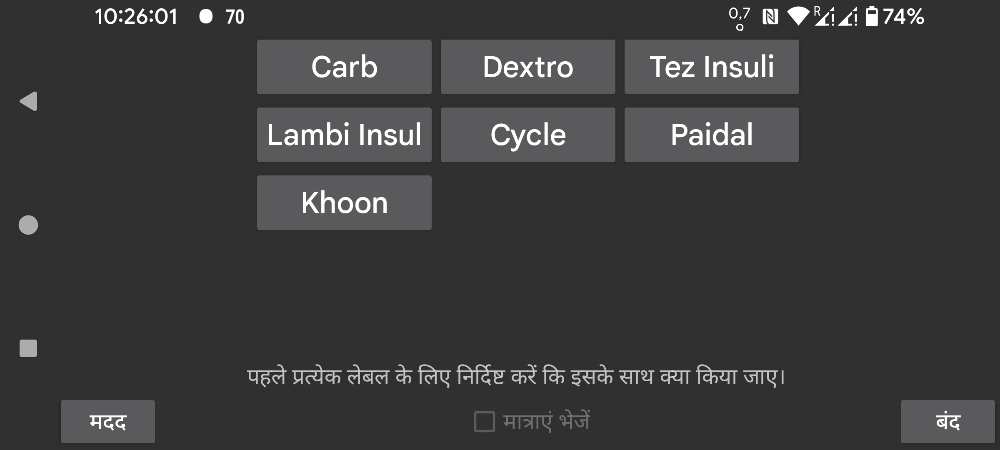

Libreview को मात्राएं भेजने के लिए "मात्राएं भेजें" सेट करें। "मात्राएं भेजें" चालू करने से पहले, आपको प्रत्येक लेबल के लिए निर्दिष्ट करना होगा कि उस लेबल के तहत दर्ज की गई मात्राएं Libreview को कैसे भेजी जानी चाहिए। लेबल स्वयं बायां मेन्यू->सेटिंग्स->"संख्या लेबल" में बनाए, संशोधित और हटाए जा सकते हैं।
Libreview को टिप्पणियाँ के रूप में भेजे गए लेबल के लिए निम्नलिखित प्रतिबंध लागू होता है: आप किसी लेबल को बदलने के बाद, पिछले लेबल के तहत दर्ज की गई मात्राओं के विलोपन और परिवर्तन Libreview में संशोधन नहीं लाएंगे। उदाहरण के लिए, यदि आपके पास पहले Bike लेबल था और आपने 20 दर्ज किया फिर Bike को Cycling में बदला और 20 को 25 में संशोधित किया, तो यह परिवर्तन Libreview में परिवर्तन नहीं लाएगा, पर Libreview में Bike 20 और Cycling 25 दोनों मौजूद होंगे। आप केवल यह कर सकते हैं कि Libreview में वर्तमान डिवाइसों को हटाएं और Juggluco में डेटा पुनः भेजें दबाएं।